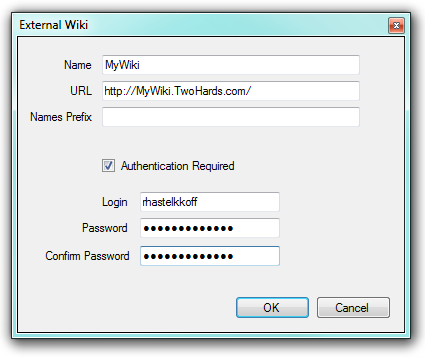

The documentation included in a GeneXus Knowledge Base (KB) can be useful for people who do not have GeneXus but have access to a Wiki-style website. End users, people who specialize in customizing software after installation and programmers who do not have the Knowledge Base at hand are just a few examples of the people who could find it useful. GeneXus lets you easily publish your KB documentation in a Wiki-style Website, making it accessible to everyone inside and outside your organization. Installing a WikiFirst of all you need to have a Wiki, where all documents will be published. To do so, download the lastest version of GXwiki Knowloedge Base and build and deploy the project with your own environment preferences. Enabling SynchronizationSynchronization is enabled by default for all documents in your Knowledge Base. You can change this default by changing the value of the Synchronize with External Wiki property in Preferences. Set the value to True or False depending on whether most documents in your KB are going to be published or not, respectively. Then, you can change the value of the Synchronize with External Wiki property property in each document you want to set as an exception. SynchronizationAfter you have set the publishing defaults and exceptions according to your needs, select Synchronize by right-clicking the Documentation folder in KB Explorer. A dialog will be displayed prompting you for your Wiki Server(s) and allowing you to publish. C# http://localhost/GXwiki6.NetEnvironment/ Java http://localhost:8080/GXwiki6JavaEnvironment/servlet/ In case your wiki needs authentication, set this values in the dialog and finally hit the Synchronize button.  Why more than one Wiki Server?The idea behind this feature is that you may have several installations, each with their separate Documentation Wiki. When you make a change in your documentation you will probably want to publish this change with all your customers.
|
| Pages |
| Synchronize with External Wiki property |